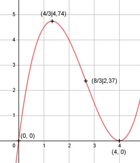

Aufgabe 20 f(x) = 0,5x3 - 4x2 + 8x f'(x) = 1,5x2 - 8x + 8, f''(x) = 3x - 8, f'''(x) = 3 Definitionsbereich: -∞ < x < ∞ Wertebereich: -∞ < f(x) < ∞ Asymptoten: - Symmetrie: - Nullstellen: 0,5x3 - 4x2 + 8x = 0 0,5x * (x2 - 8x + 16) = 0 0,5x = =| :0,5 x1 = 0 x2 - 8x + 16 = 0 p, q - Formel: p = -8, q = 16 x2,3 = x2,3 = 4 ± x2,3 = 4 ± x2,3 = 4 (Berührpunkt, Extrempunkt) N1(0|0), N2,3(4|0) Schnittpunkt mit der y-Achse: f(0) = 0,5 * 03 - 4 * 02 + 8 = 0 = 0 Sy(0|0) Extrempunkte: 1,5x2 - 8x + 8 = 0 A, B, C - Formel: A = 1,5, B = -8, C = 8 x1,2 = x1,2 = x1,2 = 8 ± 4 x1,2 = ------- 3 x1 = 4, f(4) = 0 4 x2 = --- 3 4 4 4 4 f(---) = 0,5*(---)3 - 4*(---)2 + 8*(---) = 4,74 3 3 3 3 f''(4) = 3 * 4 - 8 = 4 > 0 --> Tiefpunkt (4|0) 4 4 f''(---) = 3 * --- - 8 = - 4 < 0 --> 3 3 4 Hochpunkt (---|4,74) 3 Wendepunkte: 3x - 8 = 0|+8 3x = 8 |:3 8 8 x = ---, f(---) = 2,37, f''' ≠ 0 --> 3 3 8 Wendepunkt (---|2,37) 3 Graph:
